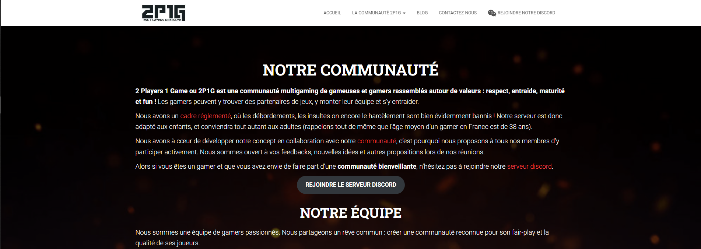
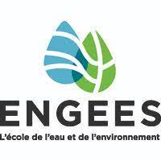
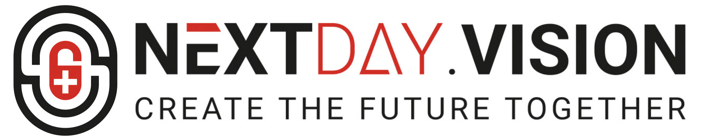
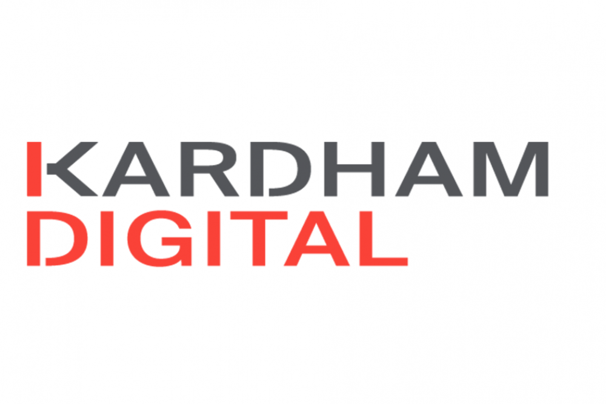

2 Players 1 Game
Création d'un réseau social sur worpress à l'aide du plugin buddypress autour du jeu vidéo. Les utilisateurs ont accès à
l'édition de leur profil
de joueur qui contient les informations de jeux auquel ils jouent, le pseudo, leurs jeux du moment.
L'équipe pourra aussi créer différents articles autour du jeux-vidéos.

ENGEES
Développement de deux modules complémentaires en python pour le logiciel TSMO - Un module graphique afin de pouvoir afficher
les résultats graphiquement pour plus de lisibilité et un module de prospective financière.

NextDay.Vision
Développement de deux modules pour OTPOne API :
Développement du panel de management d’application pour les développeurs.
Développement d’un serveur radius sous forme de service windows qui utilise l’API OTPONE.

Kardham-Digital
Développement d'un helpdesk sur une application de gestion de smartbuilding :
Veille technologique effectué pour observer le workflow des help desk
Définitions des différents besoins de l’helpdesk (création d'un ticket, assignement d'un ticket, gestion
des types d'incidents, gestion des types de priorité d'un ticket, affichage de différents rapports de
gestion du helpdesk)